REP 43.10.2 滑槽 D2 770 (CDM770) 
参考 PL:PL 43.10b
Removal

执行IOT关机步骤. 确认电源已关闭并拔掉电源插头.
拆卸 CDM. (REP 43.1.2)
拆卸顶盖. (PL 43.1b)
拆卸后上盖板组件. (PL 43.1b)
打开 the 前面 门. (PL 43.1b)
拆卸内盖板. (图 1)
释放 Latch 组件 (1a).
Raise 滑槽 杠杆.
拆卸螺钉（x3）.
拆卸内盖板.
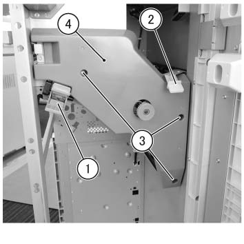
(图 1) cdw443012
拆卸 ...的后面 滑槽 冷却 风扇 组件. (图 2)
断开连接器.
拆卸螺钉（x2）.
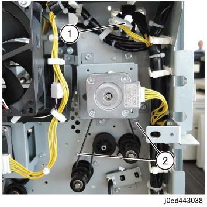
(图 2) cd443038
拆卸 ...的前面 滑槽 冷却 风扇 组件. (图 3)
拆卸螺钉（x2）.
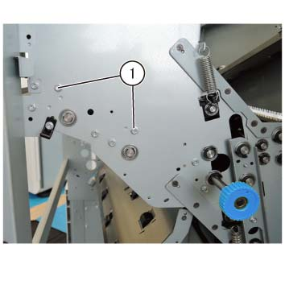
(图 3) cdw443013
拆卸 滑槽 冷却 风扇 组件. (图 4)
拆卸电缆 条带.
拆卸 滑槽 冷却 风扇 组件.
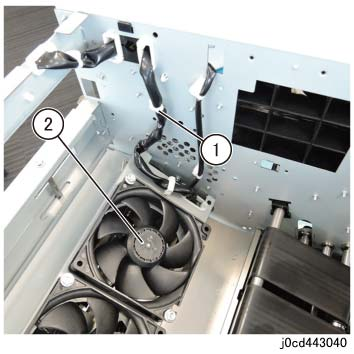
(图 4) cd443040
断开连接器 的 CDM 传输 传感器. (图 5)
断开连接器.
释放 从 卡箍.
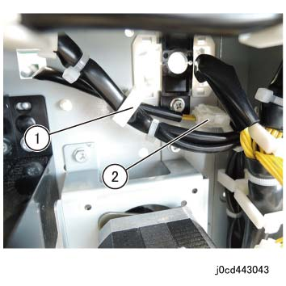
(图 5) cd443043
拆卸 ...的前面 Trans 辊. (图 6)
拆卸 E 卡扣.
拆卸轴承.
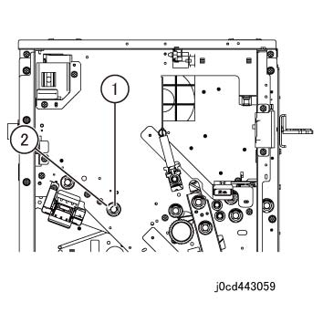
(图 6) cd443059
拆卸电缆 条带 的 CDM 传输 传感器. (图 7)
拆卸电缆 条带 (x2).
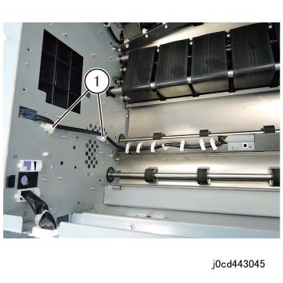
(图 7) cd443045
拆卸 CDM 传输 电机组件, 和 CDM 传输 皮带. (图 8)
断开连接器.
拆卸螺钉（x4）.
拆卸 CDM 传输 电机组件.
拆卸 CDM 传输 皮带.
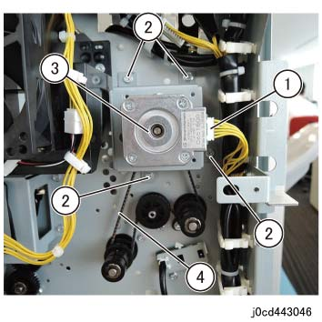
(图 8) cd443046
拆卸 components 安装到 the 辊 Axis at ...的后面 Trans 辊. (图 9)
拆卸 KL 卡扣.
拆卸 Frange OW.
拆卸 Friction 离合器.
拆卸 Pulley.
拆卸轴承.
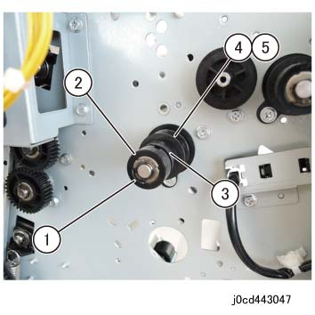
(图 9) cd443047
拆卸 CDM 消卷皮带 电机 2 组件 和 消卷器 传动皮带 2. (图 10)
断开连接器.
拆卸螺钉（x4）.
拆卸 CDM 消卷皮带 电机 2 组件.
拆卸 消卷器 传动皮带 2.
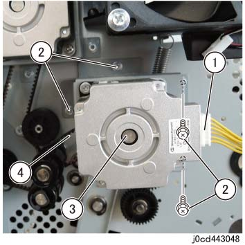
(图 10) cd443048
拆卸 Trans 辊. (PL 43.10b)
拆卸螺钉 在后面 of 滑槽 D2 770. (图 11)
拆卸 KL 卡扣.
拆卸 卡纸 CL 齿轮组件.
拆卸螺钉（x2）.
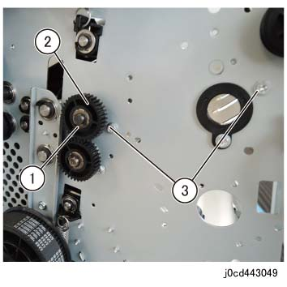
(图 11) cd443049
拆卸螺钉 在前面 of 滑槽 D2 770. (图 12)
拆卸螺钉（x2）.
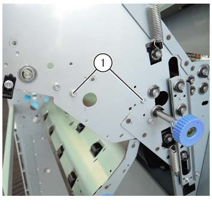
(图 12) cdw443014
拆卸 滑槽 D2 770. (图 13)
释放 从 卡箍 (x6).
拆卸电缆 条带.
拆卸螺钉.
断开连接器.
拆卸 CDM 传输 传感器 组件.
拆卸 滑槽 of 滑槽 D2 770.
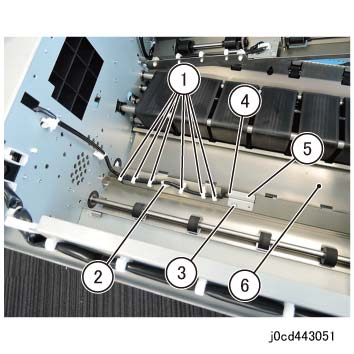
(图 13) cd443051